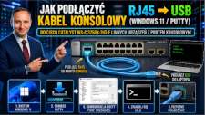

Połączenie konsolowe to absolutna podstawa pracy każdego administratora sieci i inżyniera systemowego. Niezależnie od tego, czy konfigurujesz fabrycznie nowy sprzęt, czy ratujesz router po utracie dostępu przez sieć, ten film przeprowadzi Cię przez cały proces od A do Z.
Zapraszam do lektury...